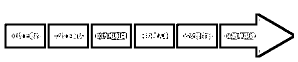

来源：https://bcn6wmdgk3ny.feishu.cn/docx/JlrudM5yfou8uXxbhftcppkQnFU
hello，大家好，先做个自我介绍：
我是青木，十三年人力资源岗工作经验，2021 年踏入即时配送行业，搭建招聘团队，主营骑手招聘项目。现有团队人数规模每年根据行业季节市场化进行调整，控制在 30-60 人区间，月入职骑手 500-1000 人，月结算骑手220-400人，团队月营收约为40万-72万。
这几年越来越多身穿黄蓝青紫等五颜六色衣服的骑手，满城市穿街走巷的，也让大家越来越关注到即时配送行业。一方面随着电商和外卖业务的快速增长，对骑手的需求量也在增加，另一方面，骑手行业的工作形式灵活，收入可观，也吸引了众多年轻人投身其中。
之前就有很多伙伴在问这一行有没有什么周边业务可以做，最好是容易上手，投入低回本快的项目。 其实就即配行业的衍生产品而言，骑手招聘是这行业中比较容易入门、且投资少、门槛低的周边业务项目，最重要的是招聘骑手一直都是即配行业平台的痛点，妥妥的刚需。
圈友如果想通过做副业的方式来尝试的话，需要找到官方代理商进行合作，因为这里涉及很多资源的对接，个人比较难触达。个人操作这个项目的流程是这样的：
一般需要投入月均约800-1500元的成本购买 BOSS 直聘的 VIP 权益，进行招聘，邀约到意向骑手后，线上对接给面试官，引导意向骑手到线下门店，由面试官负责面试和安排入职。你只需要跟进入职前后的进度，骑手跑单满 15 天达标，便可以拿到佣金，佣金比例一般在 80%-90%，也就是说如果招聘的骑手结算价是 2000 元，则一单佣金金额为 1600-1800 元。
接下来我给大家具体讲解下骑手招聘项目，让大家能再深入了解一点。

1、线上邀约
线上招聘团队通过各类招聘平台获取求职者联系方式，向求职者详细讲解岗位信息，并邀约求职者到对应面试点或代理商站点进行面试。
2、线下面试
线上招聘团队跟进求职者到面试点或站点报到，由面试官或站长接待，进行面试答疑解惑。
3、电车租赁
面试后，有兴趣做的骑手单自己没有适合跑单的电动车，就需要安排骑手跟已合作的车行租车电，签约领车。
4、办理入职
新骑手租好电动车后，就安排他到对应跑单区域的站点，由站长给新骑手办理入职手续，并进行培训，以及安排老骑手一对一带跑等事项。
5、安排住宿
如果新骑手需要解决住宿问题的，则由站长对接给合作的宿舍承包商，办理入住相关手续，并直接安排入住。
6、跑单跟进
新骑手入职后，线上招聘团队需要和站长相互配合，一起关注新骑手的跑单情况，通常都是关注前 15 天，每天是不是有出来跑单，每天跑了多少单，有没有遇到什么问题需要站点协助解决的等等。
从角色定位的角度来看，入局方式大概归类为 4 种：
一是作为全职招聘专员加入招聘团队，拿一份基本工资，加结算费 10%-15%的提成，例如结算价 2000 元/人，提成约在 200-300 元；
二是作为招聘团队的兼职招聘专员，本人不需要承担招聘渠道账号成本，无基本工资，招聘提成按阶梯制，约为结算费的 40%-70%，例如结算价 2000 元/人，提成约在 800-1400 元范围内；
三是合伙人模式，本人需要承担所有招聘渠道账号成本，推送的骑手由招聘团队对接给客户，收入正常是结算费的 80%-90%，例如结算价 2000 元/人，提成约在 1600-1800 元范围内；
第四种就是自己投资购买资源，搭建一个招聘团队，作为一个骑手招聘项目的操盘手及老板的角色，赚取结余利润。
在骑手招聘项目的整个链路中，有三个最关键的核心点，分别是：招聘资源、招聘团队、需求客户。用通俗点的话来说，就是解决这三个问题，去哪里找骑手？谁来找骑手？找到的骑手给谁？
1、现在市面上的骑手招聘项目基本上都是依靠线上招聘平台的流量来招聘骑手，从配送平台的角度，骑手用工模式区分为两类，专送和众包，也就是招聘平台角度的全职和兼职的区别。
流量的性质差别也让市面上的骑手招聘项目团队有了招聘对象侧重的差别模式，有侧重招聘全职骑手的团队，也有侧重招聘兼职骑手的团队：
① 侧重招聘全职模式：团队专注推送全职，选择结算价格比较高的站点进行深入合作，赚取高额结算费；
② 侧重招聘兼职模式：兼职流量会比全职流量更大，通过搭建面试点以及合作面试点，大量推送兼职骑手到面试点面试，安排骑手跑众包，从中赚取车辆返费以及周边产品费用，如：办理手机卡、售卖骑手装备等；
我们团队是侧重招聘全职骑手，上面一开始给大家讲的数据就是全职骑手的入职数据。当然，招聘过程中肯定也会有兼职流量进来，不能浪费，可以通过自己搭建面试点或者跟其他同行的面试点进行合作，赚取兼职骑手的相关返费。
2、作为线上招聘团队，合作的主流招聘平台有 BOSS 直聘、58 同城、智联招聘、快手招聘等。
① BOSS 直聘：
BOSS 直聘是目前骑手招聘乃至蓝领招聘方面流量效果最好的招聘平台，年轻化，直聊+精准匹配，随时随地的招聘场景，能大幅度增加产品的使用频次和用户覆盖，让它在骑手招聘市场占据了差不多 70% 的份额。
② 58 同城：
可以说以前的 58 同城在蓝领招聘市场有多风光，现在就有多失落。现在的 58 同城招聘成本过高，竞价模式使得成本不可控，资源的真实性比较差，在华南做骑手招聘项目的大部分都弃用了，主要是华中地区的用得会多一些，因为华中整体的骑手招聘结算价比较高。
有流量，能招到骑手，但成本比较高。
③ 智联招聘：
智联是老字号的传统招聘平台，近几年也看上了蓝领招聘市场，但占有率一直都偏低，可以作为流量的补充角色。优势是价格便宜，一年招 2 个骑手就能回本，但专员投入的时间和产量的效率比会较低。
④ 抖音、快手类招聘：
短视频平台的流量就不用说了，非常的可观。但毕竟短视频平台是娱乐性平台，不是专门性的招聘平台，获取到的资源精准度会比较低，简历的意向度不高，转换率会差一些。但如果说未来哪个平台有机会超过 BOSS 直聘成为蓝领类招聘流量最大的平台，那可能性最大的一定是短视频类平台的招聘渠道。
其中 BOSS 直聘的玩法是颠覆了以前的招聘平台付费购买流量线索的旧模式，不再是花越多钱就能买到越多流量，而是大家付出同等费用后，谁能获得更多流量的问题。所以如何提高账号的活跃度，让账号在竞争中获取更多流量，成了在 BOSS 直聘平台上招聘骑手的关键。
即配行业的各大配送平台（美团、饿了么、达达、小象等）都是将骑手的用工关系安排到旗下各城市配送服务代理商，骑手招聘项目的需求客户真正意义上并不是各大配送平台，而是配送服务代理商。所以想做骑手招聘项目需要成为配送服务代理商，或者是跟代理商进行合作。
现阶段各大平台的代理商是属于饱和状态，除了平台一开始运营就成功加入的代理商，其他公司或个人基本上是很难再进入平台成为代理商，平台对资质考核和资本实力要求都非常严格，所以大家想做骑手招聘项目，最实际的办法就是跟代理商合作。
即配行业的圈子比较集中，外行人比较难融入这个圈子，或者说拓客会存在一定困难度，但即配行业内的人开拓客户会相对简单。
不过对于没有圈子人脉资源的人来讲，有个【利好消息】：
目前已有蓝领平台打破了圈子壁垒，通过搭建服务系统，链接了骑手-人资商-代理商-平台交付中心，让更多骑手招聘项目团队不需要再付出拓客成本，就可以直接推送骑手入职跑单，结算佣金。此平台预计2025年会正式推出，大家可以敬请期待。
招聘团队在骑手招聘项目中是最为关键的环节，将招聘资源转化成骑手再推送给客户，中间每一个环节都需要招聘人员来执行。
招聘团队根据业务区分一般是由两部分构成：
① 线上邀约团队：主要是负责前端引流，跟意向骑手建联，邀约骑手到站点或面试点进行面试，并跟进入职跑单；
② 线下面试点面试官团队：主要是负责跟意向骑手进行面谈，根据骑手需求向骑手推荐对应平台和站点，安排骑手租车并对接到站点跑单。
线上招聘团队可以由 4 种类型成员构成，分别是全职招聘专员、兼职招聘专员、合伙人、以及虚拟 AI 招聘。
①全职招聘专员
优势：管理力度更强；
劣势：需要承担团队人工成本；
②无底薪兼职招聘专员
优势：只需要承担资源成本，成本压力较轻；
劣势：管理难度较大；
③合伙人模式
优势：不需要承担成本
劣势：开发难度较高。
④AI 招聘模式
AI 招聘模式需要结合全职团队模式开展，因为目前阶段 AI 无法脱离人工单独使用。
优势：账号活跃时间长，可以缩短养号周期，专员可以同时拥有多个账号，在减低人工成本的同时可以提高专员的人效和工作效率；
劣势：账号容易出现封号或限制。
对于刚起步或规模较小的骑手招聘项目团队，基本上是主要做【线上邀约团队】，推送骑手到代理商的站点或合作的面试点去面试和入职跑单。只有做得比较久或投入规模比较大的团队，才会进行面试点和面试官团队的搭建，因为面试点是需要有足够的推送量来养活的。
线上邀约团队推送意向骑手到代理商站点面试，容易存在较多不可控的风险因素，比如站长不是专职做面试的，面试能力和技巧会参差不齐，而且站长会有其他事务性工作，特别是午晚高峰特别忙，容易忽略意向骑手的感受，也没有时间仔细讲解。所以搭建线下面试点，通过线上邀约团队和线下面试官团队协同作战，则能更好地提高入职率和达标率。
线上邀约团队把邀约意向骑手的信息同步给面试官，备注上在与意向骑手交流过程中对方在意的各个细节，比如对方想在哪个平台跑单、哪个区域跑单；手头拮据在意租车的费用、结算的周期；能出勤的时间，是否需要住宿等等。面试官在了解到这些信息后，可以针对意向骑手的要求进行匹配，并针对要点进行详细讲解，能更好地让意向骑手成功入职，并且入职后更有利于跑单留存。
前面讲了，BOSS直聘是目前主流的招聘渠道，如何提高账号的活跃度，让账号在竞争中获取更多流量，是在 BOSS 直聘平台上招聘骑手的关键。所以这里来讲讲，如果做 BOSS 直聘的运营。
目前 BOSS 直聘的骑手招聘 VIP 权益是发布 2 条帖 +50 个开聊数。通常一个招聘专员会配备 2 个 BOSS 权益 +1 个智联招聘或鱼泡网的权益，每个专员每天有 200 个开聊数。数据优秀的招聘专员可以多配 BOSS 权益，来提高产值。
想用 BOSS 直聘作为主招聘平台，则需要解决 2 个问题：
① 需要企业拥有配送资质证明，才能发布送餐员和配送员这两个岗位；
② 需要企业能拿到美团或饿了么的授权，BOSS 直聘平台才能给大家上白名单，添加标签，有黄标或蓝标的帖会给账号带来更多流量。
所以想做骑手招聘项目的，一般都需要跟配送平台的代理商有深入合作，但目前还没有统一的平台能找到各地的代理商，只能通过认识一些人资三方公司转介绍。
掌握好使用 boss 小技巧，可以提高账号的活跃度，得到更多的系统推荐，岗位排名也会越靠前，职位会得到更多曝光，求职者主动打招呼会越来越多。
① 聊天数： 每天开聊数一定使用完，不然系统会评判你账号不活跃。不要一次性打完，分时间段打，求职者会多个时间段活跃。
② 查阅在线简历再开聊：一定要点进去浏览过求职者的在线简历之后，再打招呼，系统的推荐会越来越精准。查看简历的数量一定要大于开聊数。
③ 标记功能：可以标记一些跟岗位不符合人员，系统会自动减少此类人员的推荐，避免重复打招呼，这样系统的推荐会越来越精准。
④ 收藏功能：每天招呼数打完的同时，要求专员收藏多少个简历。收藏简历能提高账号活跃度，并且求职者能看到被谁收藏的提醒。
⑤ 多用平台功能：要简历，交换微信，交换电话号码，多用平台功能。
⑥ 回复消息要及时：一定要在一分钟之内回复，最后回复消息的一定是我们。
⑦ 复聊：已读未回复，针对这种隔天要主动跟进，至少要联系三次以上。有时间的话，可再沟通未读的，也相当于多一次沟通权益，目的就是让求职者看到。
⑧ 岗位标题添加关键词：关键词的添加能使帖被搜索到的概率提高，好的标题比较容易吸引求职者，比如在标题里添加瑞幸等品牌名。
⑨ 分享 boss 职位可增加职位二次曝光：每天分享职位到朋友圈可增加 2 个影响力，别人扫码浏览查看可增加 1 个影响力。分享到微信“文件助手”每个职位挂满 24 小时才有效，可以增加曝光。
⑩ Boss 直聘上的“有了“社区，多去互动，例如点赞、评论、点 get、提问题、发表想法、回答问题关联职位增加曝光。
每天在平台上获得的线索流量，可以通过工作微信、招聘系统等工具转变成私域流量，这样专员做得越久，手上累计的资源量就越大。可以捞到换工作的骑手或骑手转介绍。
引流到私域后，我们怎么跟进后续的进度，直到拿到佣金？
BOSS 直聘只能引流，少在上面聊得太深入，直接加微信，微信聊。BOSS 直聘上聊得多，投诉也容易多，而且求职者不加微信只要在 BOSS 直聘上聊，这样的求职者意向度不高，很大概率是同行学话术。
加微信，让求职者发定位，各代理商会将旗下站点的名字、详细地址以及精准定位给到招聘团队，根据求职者定位匹配各代理商的临近站点或面试点，邀约求职者到站点或面试点进行面试。邀约成功后在群上同步邀约信息给到面试官或站长，然后引导、跟进求职者成功到达指定地点面试和入职。
一般骑手入职后，需要线上团队和线下面试官配合，跟进骑手跑单情况，因为正常情况下骑手需要有效跑单满 15 天，代理商才会结算佣金给到招聘团队。
结算流程：次月初由招聘团队提供上月已入职骑手名单给代理商 → 代理商核对入职骑手是否符合达标条件，并反馈达标名单及总结算金额给招聘团队 → 招聘团队开具对应发票，提供给代理商 → 代理商打款。
达标条件：正常情况下，骑手满足出勤 15 天，且每天跑够代理商要求的订单数量，即视为达标。不同城市以及不同代理商对每天的订单数量要求会有一定差别，具体看代理商给的政策。
结算周期：代理商一般会在次月底结算上月的招聘费。
从邀约到面试，再到入职，最后达标结算，比例多少取决于团队能力以及站点的留存情况，大概比例可以参考下：
正常情况下，专员使用 2 个权益，月均约能获得 300 条线索，邀约人数 75 人，到面人数 38 人，入职全职骑手人数 13 人，达标人数 6 人。
如果兼职来做招聘，个人最终达标人数肯定要打个折扣，如果按达标2-4人/月、一单1800的佣金来算，兼职大概收入就是3600-7200元/月。
从开辟面试点的角度看，会可以衍生出来三种模式：
①自营面试点
②面试点招商加盟
③面试点联营
开辟面试点模式的前提，是需要自身拥有招聘团队或合作足够多的招聘团队，不管专招全职的招聘团队或专招兼职的招聘团队来保证面试点有足够的面试量。线下面试点是目前骑手招聘项目最稳定的盈利模式。
1、项目优势
为什么一开始就跟大家说骑手招聘项目比较容易入门，最主要就是因为它实操的灵活度。
01.对想做自由职业者的，想做兼职的小伙伴来说，可以选择合伙人模式，跟公司签定合作协议，通过向公司购买或租赁的权益账号进行招聘，招到的骑手通过公司送到站点跑单，从中获得结算费。
02.对想做小而美创业的小伙伴，骑手招聘项目也是很好的选择，1 间办公室，3-5 人的小团队，购买 6-10 个 BOSS 直聘权益，再找一个代理商公司深入合作，重点推送。门槛低、投入少，回本快，如果能跟合作公司谈分期采购账号，那前期的投入就更少了。
上表是在没计算租车返费及其他前端面试收入的情况下，单计算线上招聘推送的结算费收入，按广州市场骑手结算价 2000 元（取均值偏低）的情况下，团队 5 人，使用 10 个权益的情况下，人效 4-6 的经营估算。
或许有些圈友对人效概念不熟悉，人效 4 是指 1 个专员一个月 30 天，达标 4 人，平均 7 天达标 1 人；人效 5，平均 6 天达标 1 人；人效 6，平均 5 天达标 1 人。
2、项目劣势
对于没有圈子人脉的小伙伴来讲，拓客成本会比较高，可以考虑等到平台统一开放端口，不需要自行拓客的时候进入这个行业。
总结：骑手招聘项目是人力资源市场拓展创业的利好项目，投入成本低，客户群需要量庞大，蓝领类人员求职基数大，盈利模式多样化，周边产品丰富，简单，好玩。